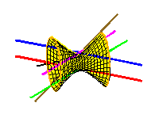

Galois groups of Schubert problems via homotopy computationAnton Leykin and Frank Sottile. |
 |
Numerical homotopy continuation of solutions to polynomial equations is the foundation
for numerical algebraic geometry, whose development has been driven by
applications of mathematics.
We use numerical homotopy continuation to investigate the problem
in pure mathematics of determining Galois groups in the Schubert calculus.
For example, we show by direct computation that the Galois group of the Schubert problem
of 3-planes in C8 meeting 15 fixed 5-planes non-trivially is the full
symmetric group S6006.